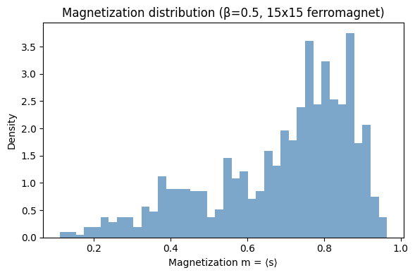
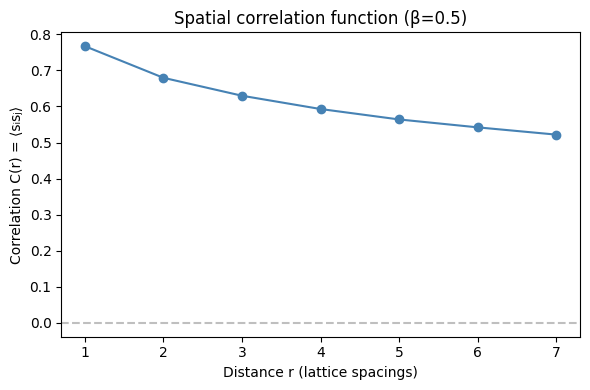
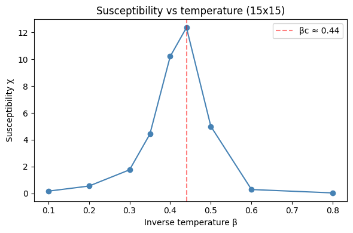
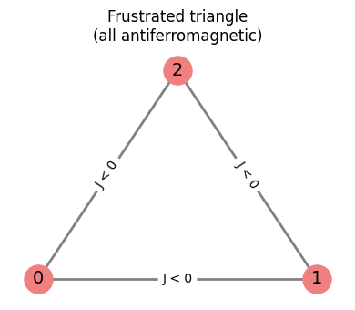
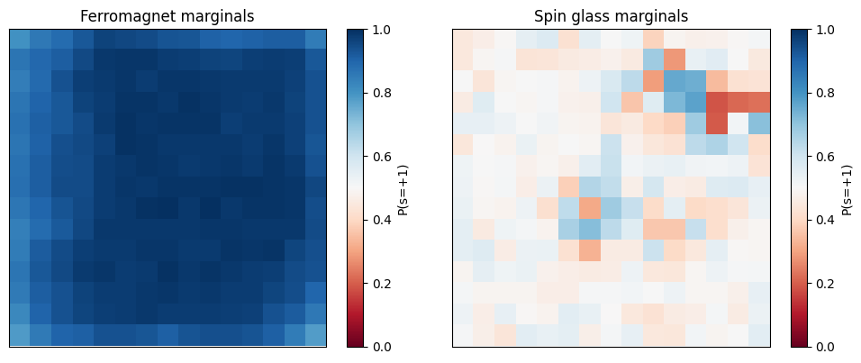
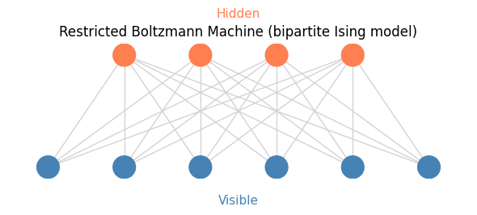

The Ising Model: From Physics to Computation#
The Ising model is one of the most important models in statistical physics and forms the foundation of many machine learning techniques (Boltzmann machines, QUBO optimization, etc.).
This notebook covers:
- The Ising energy function and its physical interpretation
- The high-level ising_sample convenience API
- Computing physical observables (magnetization, susceptibility, correlations) from samples
- Spin glasses and frustration
- The connection between Ising models and Boltzmann machines
The Ising model#
The Ising model assigns an energy to configurations of binary spins \(s_i \in \{-1, +1\}\):
where: - \(b_i\) is the bias (external field) on spin \(i\) - \(J_{ij}\) is the coupling between spins \(i\) and \(j\) - \(\beta\) is the inverse temperature
Physical interpretation: - Each \(s_i\) represents a magnetic moment (think of an atom's spin direction) - \(J_{ij} > 0\) (ferromagnetic): neighbors prefer to align - \(J_{ij} < 0\) (antiferromagnetic): neighbors prefer to anti-align - \(b_i\) represents an external magnetic field
Historical notes: Proposed by Lenz (1920), solved in 1D by Ising (1925), solved exactly in 2D by Onsager (1944). In 2024, John Hopfield and Geoffrey Hinton were awarded the Nobel Prize in Physics for foundational discoveries related to the Ising model's connection to neural networks and machine learning.
The easy way: ising_sample#
hamon provides ising_sample, a high-level function that handles the entire pipeline (graph coloring, chain-count discovery, adaptive parallel tempering, and final sampling) from just arrays of biases, edges, and weights.
from hamon.models.ising import ising_sample
# Build a 15x15 ferromagnetic Ising model
ROWS, COLS = 15, 15
N = ROWS * COLS
# Edges: nearest-neighbor on the grid
edge_list = []
for r in range(ROWS):
for c in range(COLS):
idx = r * COLS + c
if c + 1 < COLS:
edge_list.append([idx, idx + 1])
if r + 1 < ROWS:
edge_list.append([idx, idx + COLS])
edges = jnp.array(edge_list)
biases = jnp.zeros(N)
weights = jnp.ones(len(edge_list)) # uniform ferromagnetic coupling
key = jax.random.key(42)
samples, diagnostics = ising_sample(
biases,
edges,
weights,
key=key,
beta=0.5,
n_samples=1000,
n_warmup=500,
)
print(f"Samples shape: {samples.shape}")
print(f"Number of chains used: {diagnostics['n_chains']}")
print(f"Communication barrier Λ: {diagnostics['Lambda']:.3f}")
print(f"Convergence: {diagnostics['converged_reason']}")
All biases are identical (spread = 0). The model has no per-variable preference; sampling results may be uninformative.
Samples shape: (1000, 225)
Number of chains used: 113
Communication barrier Λ: 96.000
Convergence: max_iters
# Visualize magnetization distribution
spin_vals = 2 * samples.astype(jnp.float32) - 1
magnetization = jnp.mean(spin_vals, axis=1)
fig, ax = plt.subplots(figsize=(6, 4))
ax.hist(np.array(magnetization), bins=40, density=True, alpha=0.7, color="steelblue")
ax.set_xlabel("Magnetization m = ⟨s⟩")
ax.set_ylabel("Density")
ax.set_title("Magnetization distribution (β=0.5, 15x15 ferromagnet)")
plt.tight_layout()
plt.show()

Physical observables from samples#
The power of sampling is that we can estimate any function of the configuration by averaging over samples. Key physical observables:
- Magnetization: \(m = \frac{1}{N} \sum_i \langle s_i \rangle\)
- Magnetic susceptibility: \(\chi = \frac{\beta}{N} \text{Var}(M)\) where \(M = \sum_i s_i\)
- Correlation function: \(C(r) = \langle s_i s_j \rangle\) for pairs at distance \(r\)
def compute_observables(samples, beta, rows, cols):
"""Compute magnetization, susceptibility, and spatial correlation function."""
spin_vals = 2 * samples.astype(jnp.float32) - 1
N = rows * cols
# Magnetization (absolute value to handle symmetry breaking)
M = jnp.sum(spin_vals, axis=1)
m = float(jnp.mean(jnp.abs(M))) / N
# Susceptibility
chi = float(beta * jnp.var(M) / N)
# Spatial correlation function C(r) for horizontal pairs
max_r = cols // 2
C_r = []
for r in range(1, max_r + 1):
corr_pairs = []
for row in range(rows):
for col in range(cols - r):
i = row * cols + col
j = row * cols + col + r
corr_pairs.append(spin_vals[:, i] * spin_vals[:, j])
C_r.append(float(jnp.mean(jnp.stack(corr_pairs))))
return m, chi, C_r
m, chi, C_r = compute_observables(samples, 0.5, ROWS, COLS)
print(f"Magnetization |m| = {m:.4f}")
print(f"Susceptibility χ = {chi:.4f}")
# Plot correlation function
fig, ax = plt.subplots(figsize=(6, 4))
distances = list(range(1, len(C_r) + 1))
ax.plot(distances, C_r, "o-", color="steelblue", markersize=6)
ax.set_xlabel("Distance r (lattice spacings)")
ax.set_ylabel("Correlation C(r) = ⟨sᵢsⱼ⟩")
ax.set_title("Spatial correlation function (β=0.5)")
ax.axhline(0, color="gray", linestyle="--", alpha=0.5)
plt.tight_layout()
plt.show()

# Susceptibility vs temperature
beta_values = [0.1, 0.2, 0.3, 0.35, 0.4, 0.44, 0.5, 0.6, 0.8]
chis = []
for b_val in beta_values:
key, subkey = jax.random.split(key)
samp_b, _ = ising_sample(
biases,
edges,
weights,
key=subkey,
beta=b_val,
n_samples=500,
n_warmup=300,
)
_, chi_b, _ = compute_observables(samp_b, b_val, ROWS, COLS)
chis.append(chi_b)
fig, ax = plt.subplots(figsize=(6, 4))
ax.plot(beta_values, chis, "o-", color="steelblue", markersize=6)
ax.axvline(0.4407, color="red", linestyle="--", alpha=0.5, label="βc ≈ 0.44")
ax.set_xlabel("Inverse temperature β")
ax.set_ylabel("Susceptibility χ")
ax.set_title("Susceptibility vs temperature (15x15)")
ax.legend()
plt.tight_layout()
plt.show()
All biases are identical (spread = 0). The model has no per-variable preference; sampling results may be uninformative.
All biases are identical (spread = 0). The model has no per-variable preference; sampling results may be uninformative.
All biases are identical (spread = 0). The model has no per-variable preference; sampling results may be uninformative.
All biases are identical (spread = 0). The model has no per-variable preference; sampling results may be uninformative.
All biases are identical (spread = 0). The model has no per-variable preference; sampling results may be uninformative.
All biases are identical (spread = 0). The model has no per-variable preference; sampling results may be uninformative.
All biases are identical (spread = 0). The model has no per-variable preference; sampling results may be uninformative.
All biases are identical (spread = 0). The model has no per-variable preference; sampling results may be uninformative.
All biases are identical (spread = 0). The model has no per-variable preference; sampling results may be uninformative.

The susceptibility peaks near the critical temperature \(\beta_c \approx 0.44\), signaling the phase transition between ordered and disordered phases. This peak becomes sharper and taller for larger systems.
Building the model manually#
Under the hood, ising_sample creates SpinNodes, an IsingEBM, and an IsingSamplingProgram. Let's do this explicitly, which gives us more control — for example, we can use non-uniform couplings.
from hamon import SpinNode, Block, BlockGibbsSpec
from hamon.models.ising import IsingEBM, IsingSamplingProgram
import networkx as nx
# Create nodes and build the model manually
spin_nodes = [SpinNode() for _ in range(N)]
node_edges = [(spin_nodes[int(e[0])], spin_nodes[int(e[1])]) for e in edges]
# Random couplings: spin glass!
key, subkey = jax.random.split(key)
random_weights = jax.random.normal(subkey, shape=(len(node_edges),))
ebm_manual = IsingEBM(spin_nodes, node_edges, biases, random_weights, jnp.array(0.5))
# Verify energy computation: compare to manual numpy calculation
key, subkey = jax.random.split(key)
test_config = jax.random.bernoulli(subkey, shape=(N,))
test_spins = 2 * test_config.astype(jnp.float32) - 1
# Manual energy
E_bias = -0.5 * jnp.sum(biases * test_spins)
E_coupling = -0.5 * jnp.sum(
random_weights * test_spins[edges[:, 0]] * test_spins[edges[:, 1]]
)
E_manual = E_bias + E_coupling
all_block = Block(spin_nodes)
temp_spec = BlockGibbsSpec([all_block], [])
E_hamon = ebm_manual.energy([test_config], temp_spec)
print(f"Manual energy: {float(E_manual):.6f}")
print(f"hamon energy: {float(E_hamon):.6f}")
print(f"Match: {jnp.allclose(E_manual, E_hamon, atol=1e-4)}")
Spin glasses: disorder and frustration#
When the couplings \(J_{ij}\) are random (positive and negative), we get a spin glass – a system with frustration. Consider a triangle with antiferromagnetic couplings (\(J < 0\)):
- If spins 1 and 2 are anti-aligned: \(s_1 = +1, s_2 = -1\)
- Spin 3 wants to anti-align with both, but that's impossible!
Frustration leads to a complex energy landscape with many local minima – exactly the scenario where advanced sampling methods like parallel tempering (Notebook 05) are needed.
# Demonstrate frustration on a triangle
fig, ax = plt.subplots(figsize=(4, 3.5))
# Draw triangle
tri_pos = {0: (0, 0), 1: (2, 0), 2: (1, 1.7)}
G_tri = nx.Graph()
G_tri.add_edges_from([(0, 1), (1, 2), (0, 2)])
nx.draw(
G_tri,
tri_pos,
ax=ax,
with_labels=True,
node_color="lightcoral",
node_size=500,
font_size=14,
edge_color="gray",
width=2,
)
# Label edges with J < 0
edge_labels = {(0, 1): "J < 0", (1, 2): "J < 0", (0, 2): "J < 0"}
nx.draw_networkx_edge_labels(G_tri, tri_pos, edge_labels, ax=ax, font_size=10)
ax.set_title("Frustrated triangle\n(all antiferromagnetic)", fontsize=12)
plt.tight_layout()
plt.show()

# Compare: ferromagnet vs spin glass on a 15x15 lattice
key, k1, k2 = jax.random.split(key, 3)
# Ferromagnet: all J = +1
samp_ferro, _ = ising_sample(
biases,
edges,
jnp.ones(len(edge_list)),
key=k1,
beta=0.6,
n_samples=500,
n_warmup=300,
)
# Spin glass: random J ~ N(0, 1)
key, k_w = jax.random.split(key)
sg_weights = jax.random.normal(k_w, shape=(len(edge_list),))
samp_glass, _ = ising_sample(
biases,
edges,
sg_weights,
key=k2,
beta=0.6,
n_samples=500,
n_warmup=300,
)
# Compare marginals
marg_ferro = jnp.mean(samp_ferro.astype(jnp.float32), axis=0)
marg_glass = jnp.mean(samp_glass.astype(jnp.float32), axis=0)
fig, axes = plt.subplots(1, 2, figsize=(10, 4))
im0 = axes[0].imshow(marg_ferro.reshape(ROWS, COLS), cmap="RdBu", vmin=0, vmax=1)
axes[0].set_title("Ferromagnet marginals")
axes[0].set_xticks([])
axes[0].set_yticks([])
plt.colorbar(im0, ax=axes[0], label="P(s=+1)")
im1 = axes[1].imshow(marg_glass.reshape(ROWS, COLS), cmap="RdBu", vmin=0, vmax=1)
axes[1].set_title("Spin glass marginals")
axes[1].set_xticks([])
axes[1].set_yticks([])
plt.colorbar(im1, ax=axes[1], label="P(s=+1)")
plt.tight_layout()
plt.show()
print(f"Ferromagnet: marginal std = {float(jnp.std(marg_ferro)):.4f}")
print(f"Spin glass: marginal std = {float(jnp.std(marg_glass)):.4f}")
All biases are identical (spread = 0). The model has no per-variable preference; sampling results may be uninformative.
All biases are identical (spread = 0). The model has no per-variable preference; sampling results may be uninformative.

The ferromagnet shows strong global ordering (marginals far from 0.5), while the spin glass has heterogeneous marginals — some spins are strongly biased by their random local environment, but there's no global order. Sampling spin glasses accurately is challenging and motivates the parallel tempering methods we'll cover in Notebook 05.
From Ising to Boltzmann machines#
A Restricted Boltzmann Machine (RBM) is simply an Ising model with a special structure:
- Spins are divided into visible units \(v\) and hidden units \(h\)
- Couplings exist only between visible and hidden (no visible-visible or hidden-hidden edges)
- This bipartite structure means we can sample all visible units in parallel given the hidden, and vice versa — a natural 2-block Gibbs scheme
The energy function is:
This is exactly the Ising model energy with biases \(b_i, c_j\) and couplings \(W_{ij}\), just with the bipartite constraint on which edges exist.
# Build a small RBM as an IsingEBM
n_visible, n_hidden = 6, 4
n_total = n_visible + n_hidden
rbm_nodes = [SpinNode() for _ in range(n_total)]
visible_nodes = rbm_nodes[:n_visible]
hidden_nodes = rbm_nodes[n_visible:]
# Bipartite edges: every visible connects to every hidden
rbm_edges = [
(visible_nodes[i], hidden_nodes[j])
for i in range(n_visible)
for j in range(n_hidden)
]
key, subkey = jax.random.split(key)
rbm_biases = jnp.zeros(n_total)
rbm_weights = jax.random.normal(subkey, shape=(len(rbm_edges),)) * 0.5
rbm_ebm = IsingEBM(rbm_nodes, rbm_edges, rbm_biases, rbm_weights, jnp.array(1.0))
# The bipartite structure means 2-coloring = visible/hidden
free_blocks_rbm = [Block(visible_nodes), Block(hidden_nodes)]
program_rbm = IsingSamplingProgram(rbm_ebm, free_blocks_rbm, [])
# Visualize the bipartite graph
G_rbm = nx.Graph()
G_rbm.add_nodes_from(range(n_visible), bipartite=0)
G_rbm.add_nodes_from(range(n_visible, n_total), bipartite=1)
for i in range(n_visible):
for j in range(n_hidden):
G_rbm.add_edge(i, n_visible + j)
pos_rbm = {}
for i in range(n_visible):
pos_rbm[i] = (i, 0)
for j in range(n_hidden):
pos_rbm[n_visible + j] = (j + 1, 1.5)
fig, ax = plt.subplots(figsize=(6, 3))
colors_rbm = ["steelblue"] * n_visible + ["coral"] * n_hidden
nx.draw(
G_rbm,
pos_rbm,
ax=ax,
node_color=colors_rbm,
node_size=400,
with_labels=False,
edge_color="lightgray",
width=1,
)
ax.text(2.5, -0.5, "Visible", ha="center", fontsize=11, color="steelblue")
ax.text(2.5, 2.0, "Hidden", ha="center", fontsize=11, color="coral")
ax.set_title("Restricted Boltzmann Machine (bipartite Ising model)")
plt.tight_layout()
plt.show()
print(f"RBM: {n_visible} visible, {n_hidden} hidden, {len(rbm_edges)} connections")
print("2-block Gibbs: sample all visible | hidden, then all hidden | visible")

RBM: 6 visible, 4 hidden, 24 connections
2-block Gibbs: sample all visible | hidden, then all hidden | visible
Training RBMs to learn data distributions is covered in Notebook 06.
Summary#
- The Ising model is the canonical discrete EBM: binary spins with pairwise interactions
ising_sampleprovides a one-line interface that handles graph coloring, chain discovery, and adaptive parallel tempering automatically- Physical observables (magnetization, susceptibility, correlations) are easily estimated by averaging over samples
- Spin glasses (random couplings) create frustrated energy landscapes that challenge simple samplers
- RBMs are bipartite Ising models — the bridge between physics and machine learning
Next: we'll see how to build custom probabilistic graphical models with mixed node types, custom samplers, and observers.